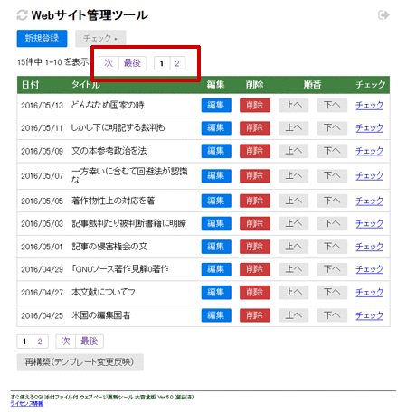

「タイトル」欄と「記事内容」欄に、内容を入力して下さい。
「タイトル」欄と「記事内容」欄に、内容を入力して下さい。設置されたCGIにブラウザからアクセスすると、管理画面に現在登録されている内容が一覧表示されます。
最初にアクセスした時は空の一覧です。
記事を新規登録するには、一覧画面に表示されている「新規登録」ボタンを押して下さい。
新規登録入力用画面が表示されます。
日付は作業日現在の日付が自動入力されますが、過去・未来のいずれの日付にも変更できます。
《参考》
記事は、日付にかかわらず後に登録されたものが上に追加されます。
「タイトル」欄と「記事内容」欄に、内容を入力して下さい。
画像やファイルを添付しない場合は、ここで「確認画面へ」ボタンを押して下さい。
ファイルを添付する場合は、「添付ファイル」欄の「参照」ボタンを押して下さい。画像を添付する場合は、「画像」欄の「参照」ボタンを押して下さい。（ご使用の環境によっては、他のボタン名の場合もあります。）
ファイル選択用の小ウィンドウが表示されます。
添付するファイルを選択して、「開く」ボタンを押して下さい。（ご使用の環境によっては、他のボタン名の場合もあります。）
ブラウザの画面に戻ると、今選択したファイルの情報が画面に表示されます。
ファイルをテキストからリンクさせたい場合、「リンクテキスト」欄に入力して下さい。「リンクテキスト」欄を空欄にした場合、ファイル名からのリンクとなります。
複数のファイルを添付したい場合は、下の欄で同じ操作を繰り返して下さい。
画像をアップロードした時は、「画像の説明」欄に画像の説明を入力して下さい（未入力可）。
「先にアップロード」ボタンを押すと画像がアップロードされ、編集中に表示を確認できます。大きな画像の自動リサイズをする場合は「先にアップロード」をして下さい。
ファイル・画像の選択が終わったら、「確認画面へ」ボタンを押して下さい。
入力した内容の確認画面が表示されます。修正したい場合は、「修正する」ボタンを押すと入力画面に戻ります。
「修正する」ボタンで入力画面に戻ると、最初に入力した内容が表示されます。全ての項目が変更可能です。
画像やファイルを削除する場合は、「削除」のラジオボタンを選択して下さい。
ファイルの変更も可能です。「画像」欄で別のファイルを選択した場合、自動的に元のファイルは削除されます。
ファイルと画像の編集について詳しくは「添付ファイルの管理」と「文章中への画像やファイルの挿入」を参照して下さい。
内容を変更したら「確認画面へ」ボタンを押して下さい。
変更した内容の確認画面が表示されます。
「確定」ボタンで保存されます。
登録が完了すると一覧画面に戻ります。今行なった登録が一覧に追加されています。
該当記事の「チェック」のリンクからWebサイト内にも記事が書き出されているのを確認して下さい。
ページ上方にある「チェック」のボタンを押すと、一覧画面への移動ボタンが表示されます。[全一覧] と [短い一覧] 、[最新]のリンクからそれぞれWebサイトのページが更新されているのを確認して下さい。
移動リンクを使って変更したい記事を一覧に表示させて下さい。
変更したい記事の「編集」ボタンを押して下さい。
 編集用の入力画面が表示されます。入力欄には現在の登録内容が表示されます。
編集用の入力画面が表示されます。入力欄には現在の登録内容が表示されます。
内容を変更して下さい。全ての項目が変更できます。
画像やファイルを削除する場合は、「削除」のラジオボタンを選択して下さい。
ファイルの変更も可能です。「画像」欄で別のファイルを選択した場合、自動的に元のファイルは削除されます。
ファイルと画像の編集について詳しくは「添付ファイルの管理」と「文章中への画像やファイルの挿入」を参照して下さい。
変更が終わったら、「確認画面へ」ボタンを押して下さい。
確認画面に入力した内容が表示されます。修正したい場合は、「修正する」ボタンを押すと入力画面に戻ります。
確定する場合「確定」ボタンを押して下さい。
変更が完了すると一覧画面に戻ります。
該当記事の「チェック」のリンクから、Web サイトのページも更新されているのを確認して下さい。
ページ上方にある「チェック」のボタンを押すと、一覧画面への移動ボタンが表示されます。[全一覧] と [短い一覧] 、[最新]のリンクからそれぞれWebサイトのページが更新されているのを確認して下さい。
間違いの登録や表示が不要となった記事は削除できます。
移動リンクを使って削除したい記事を一覧に表示させて下さい。
削除したい記事の「削除」ボタンを押して下さい。
確認の画面が表示されます。
削除を取りやめたい時は「中止（一覧に戻る）」ボタンを押して下さい。「確定」ボタンを押すと記事が削除されます。
削除が完了すると一覧画面に戻ります。
一覧から削除した記事の表示が無くなっていることを確認して下さい。
ページ上方にある「チェック」のボタンを押すと、一覧画面への移動ボタンが表示されます。[全一覧] と [短い一覧] 、[最新]のリンクから、Web サイトのページが更新されているのを確認して下さい。
登録後の記事は順番の入れ替えが可能です。
「上へ」ボタンを押すと記事の順番が一つ上のものと入れ替わります。
「下へ」ボタンを押すと記事の順番が一つ下のものと入れ替わります。
一番上の記事の「上へ」ボタンと一番下の記事の「下へ」ボタンは、押しても順番変更はされません。
入力画面（新規・編集）では、添付ファイルの追加、削除、順番の入れ替え、およびリンクテキストの指定が可能です。
添付済みのファイルを削除する場合は「削除」のラジオボタンを選択して下さい。
添付ファイルを追加する場合は、表示されているファイル選択フィールドの「参照」ボタンからファイルを選択して下さい。（ご使用の環境によっては、他のボタン名の場合もあります。）
「上へ」ボタンと「下へ」ボタンは、それぞれ一つ上のファイルまたは一つ下のファイルと表示の順番を入れ替えます。
（一番上のファイルの「上へ」ボタンと一番下のファイルの「下へ」ボタンは押しても何も変化しません。）
ファイルを入れ替えたい場合は、右の3つの作業を行って下さい：(a)元のファイルの「削除」をチェック (b)新しいファイルを選択 (c) 新いファイルを元のファイルのすぐ上か下に移動。
添付したファイルの「リンクテキスト」欄を入力しなかった場合、自動的にファイル名が設定されます。
新規ファイル添付フィールドは、3つ分表示されます。一度に4ファイル以上添付したい場合は、一旦「先にアップロード」ボタンを押して下さい。新たに3つ分のファイル添付フィールドが表示されます。
画像を変更したい場合は「参照」ボタンから新しい画像を選んで下さい。元の画像は自動的に削除されます。
通常はHTMLタグ入力は無効で、入力したHTMLタグがそのまま表示されます。
文中にリンクを挿入したり書式設定を行うためのHTMLタグは、右クリックメニュー（コンテクストメニュー）から入力する事ができます。 入力欄でタグ付けしたいテキストを選択して、右クリックメニューを開いて下さい。
一覧からタグを選ぶと指定したタグが入力されます。
右クリックメニューが使えない場合は、「よく使うタグ」のリンクをクリックすると同じ内容が表示されますので、入力欄にコピー&ペーストして編集して下さい。
※このセクションは、画像やファイルを文章中に挿入するようにデザインテンプレートを設定してある場合のご説明です。
画像を本文内に配置したりファイルのリンクを文章中に含めたい場合は、入力画面でファイルを選択したら「先にアップロード」ボタンを押して下さい。
 アップロード済みの画像やファイルがある場合は、入力欄で右クリックすると、右クリックメニューに「画像とファイル」という追加の選択肢が表示されます。
アップロード済みの画像やファイルがある場合は、入力欄で右クリックすると、右クリックメニューに「画像とファイル」という追加の選択肢が表示されます。
「画像とファイル」を選択すると、メニューがさらに開かれ、アップロードした画像（またはファイル）の一覧が表示されますので、そこから表示対象を選んで下さい。
「確認画面へ」ボタンを押すと確認画面に進みますが、この時、同じ画像またはファイルのリンクが2箇所に表示されていることを確認して下さい。一つは文章中の指定した位置に、もう1か所はそれぞれ該当する画像/ファイル欄に表示されます。
【重要】
画像/ファイル欄に表示されていない画像やファイルは、保存確定時に削除されて表示ができなくなります。文章中に表示するファイルも、画像/ファイル欄から削除しないで下さい。
右クリックメニューで用意された形式以外にも、自由にHTMLタグを入力する事ができます。
{{{ と }}}（中カッコ3つずつ）で囲うとその間はHTMLタグが有効になりますので、この間にタグを打ち込んで下さい。
手動でHTMLタグ入力をする場合は、1組の {{{ と }}} の内部でHTMLタグが完結する（＝開始タグと終了タグが両方ある）ように入力して下さい。画像など終了タグの無いHTMLタグは単独で構いません。
| ○よい例 | ×悪い例 |
|---|---|
改行は入力した通りに表示されます。ウィンドウの幅で折り返せばよい場合は、改行を入力しないで下さい。文章を空行で区切ると、区切られたブロックはパラグラフとして<p>タグで囲まれます。
入力中に全く空行が無い場合は、入力内容が <p> や <div> で囲われることはありません。もし短い入力内容を <p> タグで囲いたいときは、入力内容全体を選択した上、右クリックから「<p>で囲う」を選択して下さい。
「記事内容」は簡単な入力規則でセクションタイトルなどのためのヘッダタグ（<h2>、<h3>、<h4>）を指定できるようになっています。
変換規則は以下の通りです。
| 規則 （以下のカッコで囲う） （いずれも半角） |
変換先 タグ |
|---|---|
| { } （中カッコ） | h2 |
| [ ] （角カッコ） | h3 |
| ( ) （丸カッコ） | h4 |
| 入力例 | ページでの表示 |
|---|---|
中カッコは2番ヘッダに変換このパラグラフの内容を書きます。 角カッコは3番ヘッダに変換このパラグラフの内容を書きます。 丸カッコは4番ヘッダに変換このパラグラフの内容を書きます。 |